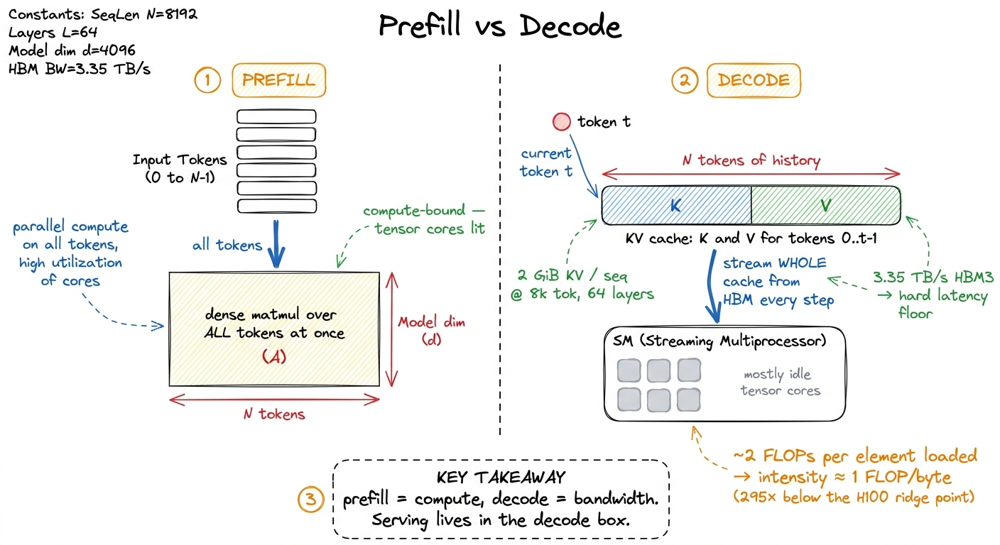
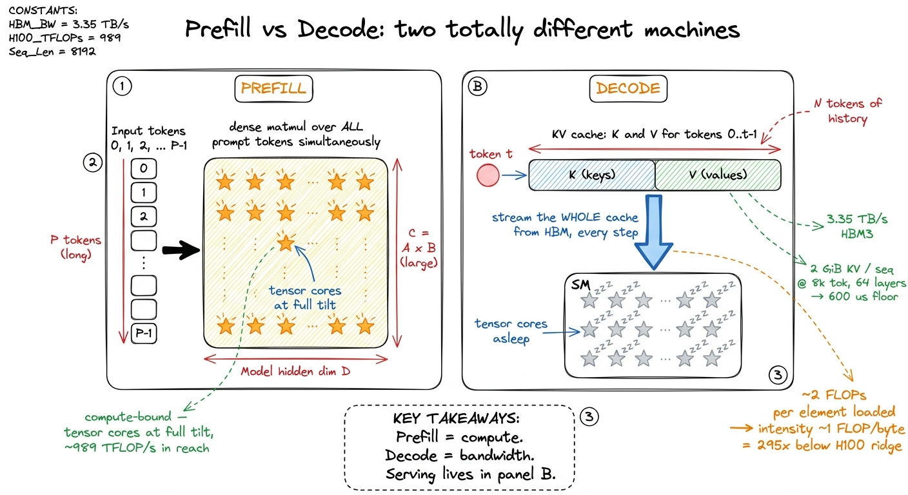
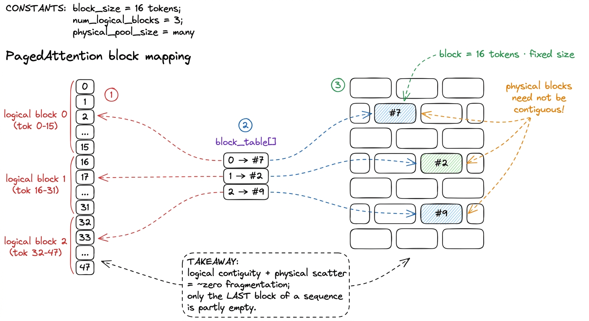

The KV cache & PagedAttention
Training a transformer is a compute problem. Serving one is a memory problem. That single sentence is the whole reason this section exists, and the KV cache is where the sentence becomes concrete. When you generate text one token at a time, almost every kernel you launch spends its life reading a giant array of past keys and values out of HBM, doing a trivial amount of math on them, and writing one small vector back. The tensor cores you paid a fortune for are asleep. You are, in the language of the three regimes, catastrophically memory-bandwidth-bound — and the art of inference kernels is mostly the art of moving that KV cache around less, and more cleverly.
This article builds up the KV cache from first principles, shows exactly why decode reads all of it per token, and then walks through PagedAttention — the block-table trick from vLLM that made the cache stop wasting half your GPU — plus the FP8 variant everyone ships in production now.
Why decode is memory-bound
Attention needs, for the token it is currently generating, the keys and values of every token that came before. If you recomputed those from scratch each step you would redo O(n²) work per token and serving would be hopeless. So instead you cache them: after a token is processed, its per-layer key vector and value vector are appended to a running buffer, the KV cache, and never recomputed. This turns each decode step from an O(n²) recompute into an O(n) read.
But that O(n) read is enormous, and it is pure memory traffic. Consider one decode step for one sequence. For every layer and every KV head you must stream the entire history of keys and values from HBM into the SM, compute one dot-product-and-softmax against them, and produce a single output vector. The arithmetic per byte is tiny: roughly two FLOPs — a multiply and an add — for every element of K and V you load, and in FP16 each element is 2 bytes, so the arithmetic intensity is about 1 FLOP/byte.1 One FLOP per byte, for a batch of one, is essentially the same intensity floor as the naive GEMM baseline. The fix there was reuse across a block of threads; in decode there is nothing to reuse — each token's K and V are read exactly once and thrown away. Batching is the only lever that adds reuse: multiple sequences (or multiple query heads under GQA) share the same K and V loads, which is why throughput scales with batch long after single-stream latency has bottomed out. That is hundreds of times below the H100's ridge point of ~295 FLOPs per byte.
Put a number on it. A single 8192-token sequence on a model with 8 KV heads and a head dimension of 128, in FP16, holds per layer:
K bytes = 8192 tokens × 8 heads × 128 dim × 2 bytes = 16.0 MiB
V bytes = same = 16.0 MiBAt ~64 layers that is about 2 GiB of KV cache for one sequence, and every decode step reads the whole thing. At the H100's 3.35 TB/s of HBM3 bandwidth, streaming 2 GiB takes about 600 microseconds of pure memory time — a hard floor on your per-token latency that no amount of tensor-core throughput can lower. The 989 TFLOP/s the chip can do is completely irrelevant here; you will never get near it during decode.

figure rendering · Prefill lights the tensor cores; decode just heaves the KV cache backThe naive KV-cache layout, and where it bleeds
The obvious layout is the one everyone writes first: for each sequence, allocate one big contiguous tensor of shape [max_seq_len, num_kv_heads, head_dim] for K and one for V, per layer, and index into it with the current position. Contiguous memory, simple pointer arithmetic, coalesced reads. What's not to like?
Two things, and they are both about the word max_seq_len.
First, you don't know the length in advance. A request might generate 10 tokens or 4000. If you allocate for the maximum, a request that stops early has paid for thousands of token-slots it never used. This is internal fragmentation — reserved-but-unused space inside an allocation — and in production traces it routinely wastes the majority of KV memory.2 The original vLLM paper measured that existing serving systems wasted 60–80% of KV memory to fragmentation and over-reservation. On a GPU where KV cache is the binding constraint on batch size, wasting 70% of it means roughly a 3× hit to the number of sequences you can serve at once — directly, throughput left on the floor.
Second, contiguous per-sequence buffers cause external fragmentation. Sequences arrive and finish at different times, freeing variable-sized holes. When a new long request arrives, you may have plenty of total free memory but no single contiguous run big enough to hold it. Now you are either rejecting requests or copying live caches around to defragment — both terrible.
The whole KV budget is precious because it competes directly with everything else for the 80 GB on the card, and it is what caps your batch size. Every byte lost to fragmentation is a sequence you could have been serving but aren't.

figure rendering · The naive layout bleeds most of its KV budget to fragmentation. PagingPagedAttention: give the cache a page table
The fix is stolen wholesale from operating systems. Virtual memory gives every process the illusion of a huge contiguous address space out of physical RAM that is fragmented to bits: a page table maps contiguous virtual pages to scattered physical pages, and nobody has to be contiguous. PagedAttention applies exactly this idea to the KV cache.
The KV cache for the whole engine is carved up front into a big pool of fixed-size blocks (vLLM calls them physical KV blocks; a block holds the K and V for a small fixed number of tokens — commonly 16). Each sequence gets a block table: a small array mapping its logical block index — token position divided by block size — to a physical block number somewhere in the pool. Tokens 0..15 live in whatever physical block the table's slot 0 points at; tokens 16..31 in slot 1's block; and those two physical blocks need not be anywhere near each other in memory.

figure rendering · The block table maps a sequence's logical blocks to scattered physicalThe payoff is immediate. Fragmentation collapses to at most one partially-filled block per sequence — the last one — because everything else is exactly full. No max-length over-reservation, because you allocate blocks lazily as the sequence grows. And no external fragmentation, because every block is the same size and interchangeable, so any free block fits any sequence. On real workloads this typically recovers the wasted majority of KV memory, which translates almost linearly into a larger batch and higher throughput.
There is a second gift that falls out of the same design: sharing. Because a physical block is just a numbered chunk that any block table can point at, two sequences with a common prefix — the same system prompt, the same few-shot examples — can point their early block-table slots at the same physical blocks, with a reference count. Prefix caching, parallel sampling, and beam search all become "point multiple block tables at shared blocks," copying a block only when one branch first writes into it. Copy-on-write, straight out of the OS playbook.
The kernel that gathers scattered KV
Elegance on the memory-management side buys you a complication on the kernel side. A textbook attention kernel assumes K and V are contiguous, so it can compute one base pointer and stride linearly. Under paging, token t's KV lives at a physical address you can only find by looking it up: physical_block = block_table[t / BLOCK], then offset = (t % BLOCK) within that block. The attention kernel has to perform this indirection itself, per block, as it streams the history.
The structure of the paged attention kernel, then, is: assign one thread block (usually one per KV head per query) to walk the sequence block by block; for each logical block, read the block table to get the physical block id, compute that block's base address, and load its BLOCK keys and values with the normal coalesced, vectorized loads (float4 where alignment allows). Accumulate the running softmax online — the FlashAttention trick of keeping a running max and running denominator so you never materialize the full attention matrix — and move to the next block.
// One CTA handles one (query, kv_head). Walk the sequence block by block.
const int num_blocks = ceil_div(seq_len, BLOCK);
float m_i = -INFINITY, l_i = 0.f; // running max, running denom
float acc[HEAD_DIM] = {0};
for (int lb = 0; lb < num_blocks; ++lb) {
int phys = block_table[seq_id * max_blocks + lb]; // the indirection
const half* k_blk = k_cache + phys * BLOCK * HEAD_DIM;
const half* v_blk = v_cache + phys * BLOCK * HEAD_DIM;
for (int t = 0; t < BLOCK; ++t) { // tokens in this block
float s = dot(q, k_blk + t * HEAD_DIM); // vectorized load inside
float m_new = fmaxf(m_i, s);
float p = __expf(s - m_new);
float scale = __expf(m_i - m_new);
l_i = l_i * scale + p; // online softmax
for (int d = 0; d < HEAD_DIM; ++d)
acc[d] = acc[d] * scale + p * __half2float(v_blk[t * HEAD_DIM + d]);
m_i = m_new;
}
}The single line that matters is the block-table lookup. Everything else is ordinary FlashAttention-style streaming; the paging cost is one extra dependent load per block. Because a block holds 16 tokens, that indirection is amortized over 16 × HEAD_DIM element loads, so it costs essentially nothing — the kernel stays firmly bandwidth-bound on the actual K and V reads, exactly as it should be. The block size is a genuine tuning knob: smaller blocks waste less memory in that final partial block but pay the indirection more often; larger blocks amortize the lookup better but round up more aggressively. 16 is the common sweet spot.3 When one of these kernels hangs — an out-of-bounds block id from a corrupt block table is a classic — the printf approach falls apart because there is no output at all. vLLM's own debugging writeup leans on CUDA_ENABLE_USER_TRIGGERED_COREDUMP=1 plus a coredump pipe and cuda-gdb to catch where a wedged kernel is stuck, then nvdisasm to recover the inlined source line through the template soup. Compile with -lineinfo or you get an address and no line number.
Because the kernel is bandwidth-bound, its optimizations are memory ones, not math: keep the loads coalesced and vectorized, keep enough warps resident to hide the dependent block-table load, and — the big one — reduce the number of bytes each token costs in the first place.
FP8 KV cache: halve the bytes, halve the floor
If decode latency is set by how many bytes of KV you stream, the most direct win is to make each K and V element smaller. Storing the cache in FP8 — an 8-bit float, typically the e4m3 variant — instead of FP16 halves the KV footprint at a stroke. That means half the HBM traffic per decode step, so roughly half the memory-bound latency, and simultaneously twice as many tokens fit in the same GPU memory, so a bigger batch and higher throughput. Both of the things you care about, from one change.
The paged kernel absorbs this almost for free: it loads FP8 bytes from the cache and dequantizes to FP16/FP32 in registers right before the dot product, so the compute path is unchanged and only the loads shrink. In practice you keep a per-tensor or per-block scale factor alongside the cache so the dequantize is a single multiply. The accuracy hit is small and usually invisible on downstream metrics, because the KV cache tolerates low precision far better than weights do — the softmax is forgiving, and any single key's contribution is one term in a large sum.4 You can push further than FP8. The frontier is architectural KV reduction: grouped-query attention already shares K and V across query heads (that "8 KV heads" in the sizing above is GQA at work), and latent-attention and compressed-attention schemes shrink the cache by another order of magnitude. DeepSeek-V4-Pro reports needing only ~10% of the KV cache of its predecessor at 1M tokens via compressed/heavily-compressed attention, and stores much of the model in FP8 with FP4 experts. Paging, FP8, and architectural compression stack — they attack different bytes.
Stack the three and the picture is clear. PagedAttention removes the bytes you were wasting to fragmentation. FP8 halves the bytes you legitimately store. Architectural tricks like GQA and latent attention cut the number of KV vectors you keep at all. Each attacks a different part of the same enemy — the KV cache is the byte budget of inference — and every byte you don't move is latency you don't pay.
The through-line of this whole section is the one from the opening: decode is a bandwidth problem wearing an attention-shaped hat. We measured why (stream the whole cache per token), we fixed the waste (page it), we fixed the access (a one-line indirection in the kernel), and we shrank the payload (FP8). Next we take the same online-softmax kernel skeleton you saw above and turn it into a proper FlashAttention kernel for prefill — where, for once, there is enough arithmetic to wake the tensor cores back up.